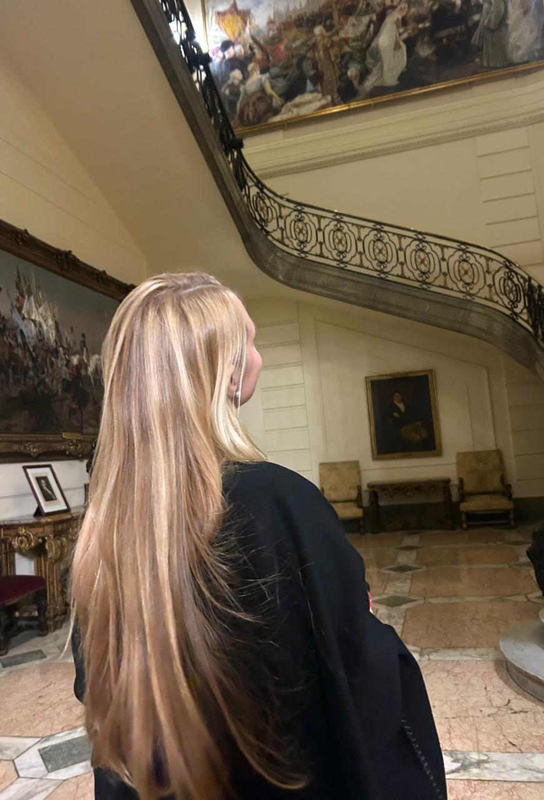

Mi nombre es Sofia Cearras, soy estudiante de 3er año de diseño integral en la universidad Torcuato Di Tella.
Desde siempre me he sentido impulsado por una gran creatividad y una mente abierta, características que me definen y que me permiten imaginar, experimentar y construir ideas innovadoras con facilidad. Esta capacidad no solo me ha llevado a explorar diferentes formas de expresión, sino también a encontrar soluciones funcionales y efectivas a los desafíos que se presentan, combinando intuición estética con pensamiento estratégico. Siempre supe con certeza que el diseño era el camino ideal para canalizar este potencial, ya que me ofrece un espacio donde puedo fusionar lo visual con lo conceptual, lo artístico con lo práctico. El diseño no solo me permite expresarme, sino también generar un impacto real en el entorno y en la vida de las personas. Es un lenguaje que conecta ideas con emociones, que transforma lo cotidiano en experiencias significativas, y es justamente esa posibilidad de crear con propósito lo que me motiva profundamente.
Hasta el momento, la etapa que más disfruté dentro de la carrera fue cuando cursé diseño industrial. Fue una experiencia que realmente captó mi atención desde el primer momento, ya que me permitió explorar el proceso creativo desde una perspectiva tangible, funcional y profundamente ligada a la innovación. Me resultó no solo fascinante, sino también muy entretenido, ya que pude experimentar con materiales, formas y soluciones que van más allá de lo visual, involucrando también el uso, la ergonomía y la interacción con los objetos.
Hasta ahora, la etapa que más disfruté de la carrera fue diseño industrial. Me atrapó desde el inicio por su enfoque práctico y creativo, y lo encontré muy entretenido e inspirador. Me gustó especialmente cómo combina estética, funcionalidad e innovación para dar forma a objetos útiles y significativos.
Más allá de eso, tengo una gran pasión por el diseño automotor, la arquitectura y el diseño de interiores. Me interesan tanto los autos por su diseño técnico y emocional, como la arquitectura por su capacidad de transformar espacios y generar experiencias. También me atrae mucho el diseño de jardines y exteriores, ya que creo que integrar la naturaleza con lo construido puede generar ambientes únicos, equilibrados y llenos de vida.
Imaginemos un espacio donde el desarrollo y la experimentación sean protagonistas. Un lugar donde se lleven a cabo proyectos colaborativos que exploren nuevas áreas del diseño y donde se pueda visibilizar el talento estudiantil a través de workshops, exposiciones y charlas con referentes destacados del ámbito. Este club buscaría no solo fomentar el desarrollo profesional, sino también cultivar el pensamiento crítico entre los estudiantes, un componente vital en el mercado contemporáneo.
Un lugar donde las ideas puedan fluir libremente y donde se fomente la colaboración interdisciplinaria. En este sentido, la interacción con otras carreras es fundamental. Al abrir nuestras puertas a estudiantes de diferentes disciplinas, podremos enriquecer nuestras perspectivas y crear sinergias que potencien nuestra capacidad de innovación. Este intercambio de ideas y experiencias puede llevar a soluciones más creativas y efectivas, no solo en el campo del diseño, sino en todos los aspectos de nuestra vida académica y profesional. Asimismo, al organizar exposiciones y eventos, se podría elevar el perfil del diseño dentro de la comunidad universitaria y conectar a los estudiantes con profesionales del sector, ampliando así sus redes y oportunidades laborales.p
Para realizar productos de diseño industrial se manejar las herramientas Rhinoceros, Keyshot y Blender.
También se acerca de otras disciplinas como arte y dibujo arquitectónico.